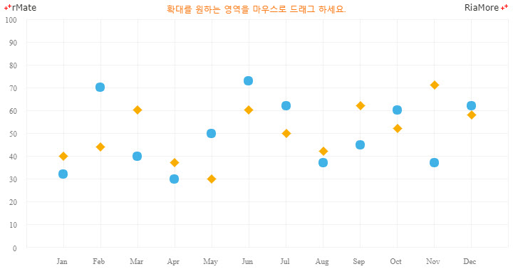
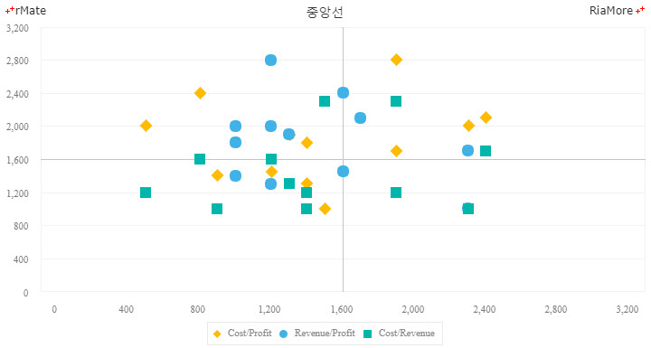
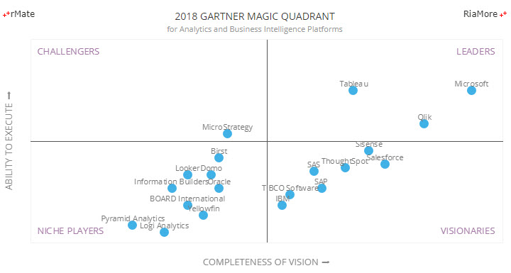

플롯 차트
플롯 차트는 스캐터 차트라고도 하며 데이터 포인트가 카테시안 축 상에서 X, Y 좌표(2 개의 변수 값)에 일반적으로 작은 도형으로 표현됩니다.
도형에 색을 칠할 경우 3 개의 변수 값을 데이터 포인트에 적용할 수 있습니다.
플롯 차트에 표시가 가능한 도형은 라인 차트의 데이터 포인트에 표시 가능한 도형과 동일합니다.
데이터 포인트에 도형 표시를 참조하십시요.
플롯 차트는 <Plot2DChart> 노드의 series 속성값에 <Plot2DSeries> 노드를 설정하여 생성할 수 있습니다.
다음은 플롯 차트를 생성하는 코드와 이를 적용해서 출력한 차트의 예제입니다.
<Plot2DChart showDataTips="true" >
...
<series>
<Plot2DSeries yField="Profit" radius="6.5" displayName="Profit">
...
</Plot2DSeries>
<Plot2DSeries yField="Cost" radius="6.5" displayName="Cost">
...
</Plot2DSeries>
</series>
</Plot2DChart>

See the CodePen 알메이트 차트 - 플롯 차트
플롯 차트 중앙에 십자선 표현
플롯 차트의 원하는 위치에 십자선을 표시할 수 있습니다. 다음은 차트의 중앙에 가로선과 세로선을 출력한 차트의 예제입니다.
이 예제에서는 가로선과 세로선을 표시하기 위해서 <GridLines> 노드의 <horizontalCenterStroke> 속성과 <verticalCenterStroke> 속성을 이용하였습니다.
<Plot2DChart showDataTips="true">
...
<series>
<Plot2DSeries xField="Cost" yField="Profit" radius="7" displayName="Cost/Profit">
...
</Plot2DSeries>
<Plot2DSeries xField="Revenue" yField="Profit" radius="6.5" displayName="Revenue/Profit">
...
</Plot2DSeries>
<Plot2DSeries xField="Cost" yField="Revenue" radius="6" displayName="Cost/Revenue">
...
</Plot2DSeries>
</series>
<backgroundElements>
<GridLines horizontalShowCenterLine="true" verticalShowCenterLine="true">
<horizontalCenterStroke>
<Stroke color="#c5c5c5"/>
</horizontalCenterStroke>
<verticalCenterStroke>
<Stroke color="#c5c5c5"/>
</verticalCenterStroke>
</GridLines>
</backgroundElements>
...
</Plot2DChart>

See the CodePen 알메이트 차트 - 플롯 차트에 십자선 표현
사분면 차트 (쿼드런트 차트)
플롯 차트에서 축의 minimum 속성값을 음수로 지정하고 <GridLines> 노드의 horizontalShowOrigin 속성값과 verticalShowOrigin 속성값을 “true” 로 설정하면 사분면 차트를 생성할 수 있습니다.
다음은 가트너 매직 쿼드런트를 표현한 예제입니다. 레이블(회사명)을 표시하기 위해서 labelPosition 속성과 upLabelField 속성이 설정되었습니다.
<Plot2DChart showDataTips="true" dataTipJsFunction="dataTipFunc">
<verticalAxis>
<LinearAxis id="vAxis" minimum="-30" maximum="30" title="ABILITY TO EXECUTE ➡"/>
</verticalAxis>
<horizontalAxis>
<LinearAxis id="hAxis" minimum="-30" maximum="30" title="COMPLETENESS OF VISION ➡"/>
</horizontalAxis>
<series>
<Plot2DSeries labelPosition="up" upLabelField="company" upLabelYOffset="3" xField="x" yField="y" radius="6.5" itemRenderer="CircleItemRenderer">
...
</Plot2DSeries>
</series>
<backgroundElements>
<GridLines direction="none" verticalShowOrigin="true" horizontalShowOrigin="true" />
</backgroundElements>
<verticalAxisRenderers>
<Axis2DRenderer axis="{vAxis}" verticalAxisTitleAlignment="vertical" showLabels="false" />
</verticalAxisRenderers>
<horizontalAxisRenderers>
<Axis2DRenderer axis="{hAxis}" showLabels="false" />
</horizontalAxisRenderers>
</Plot2DChart>

See the CodePen 알메이트 차트 - 사분면 차트 (쿼드런트 차트)